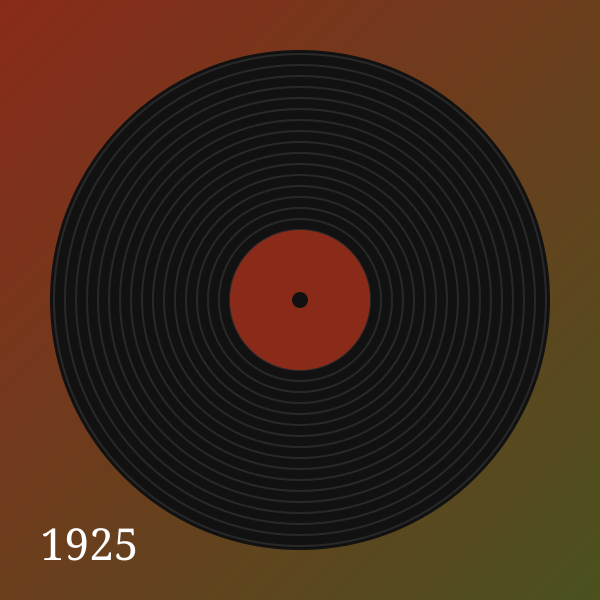

Riley Puckett — “Jesse James” (Columbia 15033-D, 1925)

Background: This is the familiar “Jesse James” ballad family (Laws E1), not the separate, more historically critical “Jesse James II” song sometimes also recorded under that title. The common ballad condemns Robert Ford as a “dirty little coward” for killing James after gaining his trust. That makes the song a possible case of betrayal accusation and counter-insult, rather than a direct narrative of revenge carried out.